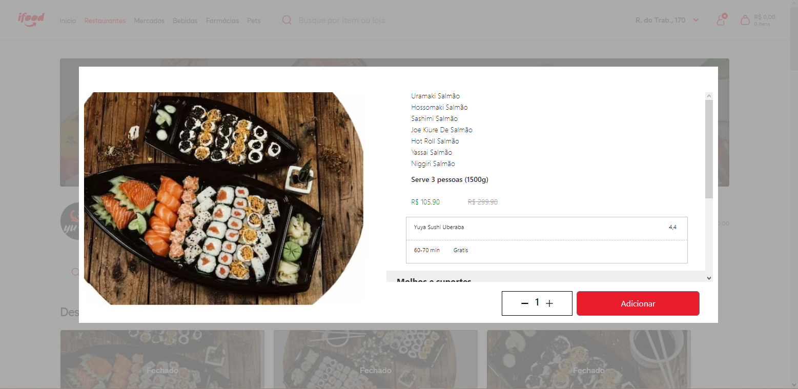

Engineering Website

Neste projeto desenvolvi um site com 5 páginas, uma home page longa e uma loja de e-commerce. Todo um SEO foi detalhado para o site obter melhores estatísticas. Otimização com A-rank no site de teste do Google.
Engineering Website

quando entrei na empresa júnior não me sentia tão confiante, então fui estudar, num destes tempos de estudo desenvolvi este site. Neste caso de estudo construí apenas as paginas do site, SEO e otimização básica.
Order Ifood
Neste projeto foi replicado a pagina de pedidos do ifood utilizando como base um restaurante de comida japonesa
Ableton Website
Utilizando o site Frontend Practice como base, desenvolvi a home page de um site genérico de nome "Ableton", utilizando HTML/SCSS, totalmente responsivo com flexbox e gridbox
Whatsapp interface
Neste projeto foi utilizado HTML+CSS para replicar a interface do whatsapp e o tema foi "Whatsapp dos sonhos"
Serasa Interface
Afim de treinar os conhecimentos em HTML/CSS foi replicado a interface do site mais famoso de negociações financeiras, Serasa